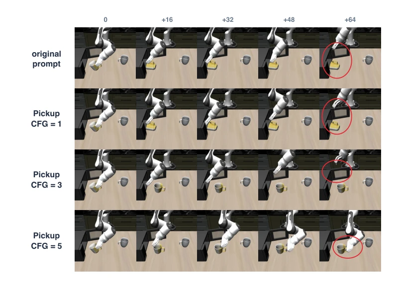
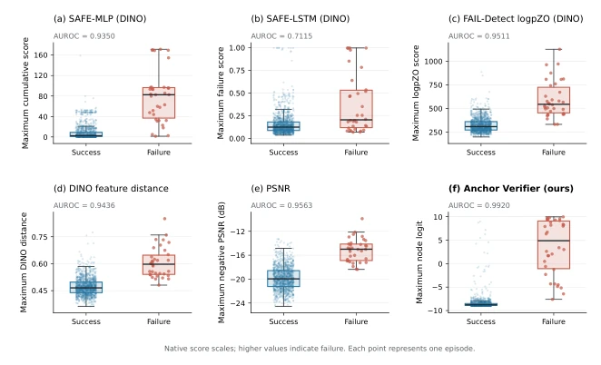

Figure 1: Attention of the frozen WAM under different instructions, with the observation and the random seed fixed. Top: attention of the action tokens. Bottom: attention of the future-video queries over the keys in the video model, under the original prompt, the empty prompt, and their difference. The two conditions produce nearly identical attention maps.
Figure 2: Overview of FAVOR. (a) The frozen WAM predicts future frames and the IDM decodes an action chunk; the predicted frames are retained as anchors. Every ∆steps, the verifier compares the observation with its anchor: a pass continues execution, and the failure interrupts the remaining actions and triggers recovery. (b) The Anchor Verifier encodes the prediction–observation pair with DINO, fuses it with action and horizon embeddings, and outputs a failure score through a causal GRU; an alarm is raised when the score exceeds τ. (c) Anchor-Guided Recovery: a VLM reads the alarmed anchor, the current observation, and the task, and issues a corrective instruction.

Figure 3: Effect of the guidance scale on recovery predictions. All branches start from the same trigger state and the corrective instruction “pick up the cup”.
Figure 4: Qualitative examples of Anchor-Guided Recovery on LIBERO. In each case, the top row shows the observed execution and the bottom row the WAM’s retained prediction up to the alarm (orange frame); red circles mark where the observation departs from its anchor. Right of the alarm, native continuation under the original instruction fails (top), while the corrective instruction issued by the VLM (green) restores the anchored condition and the task succeeds (bottom). Both branches start from the same simulator state at the alarm.

Figure 5: Distribution of the maximum episode score for successful and failed LIBERO episodes under each detector, on its native scale (higher indicates failure); each point is one episode.